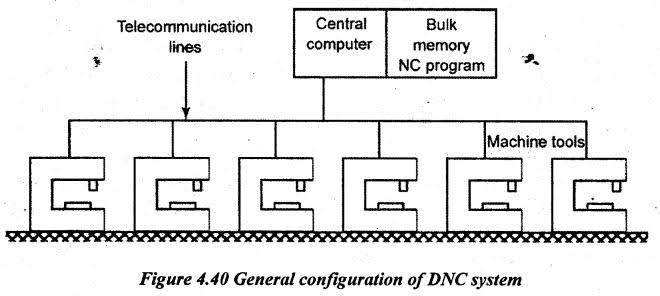
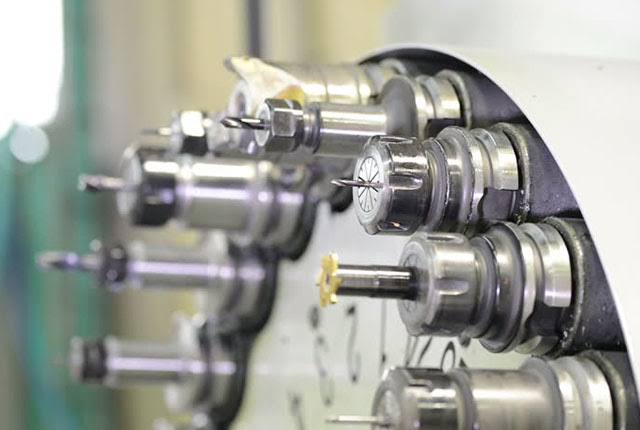
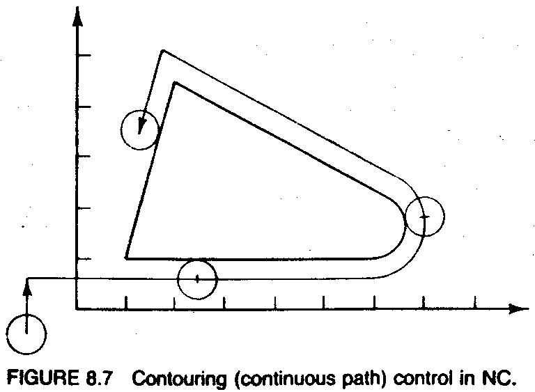
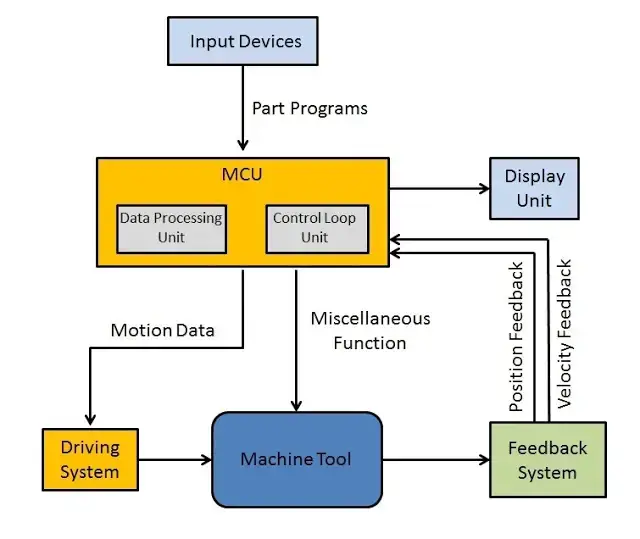
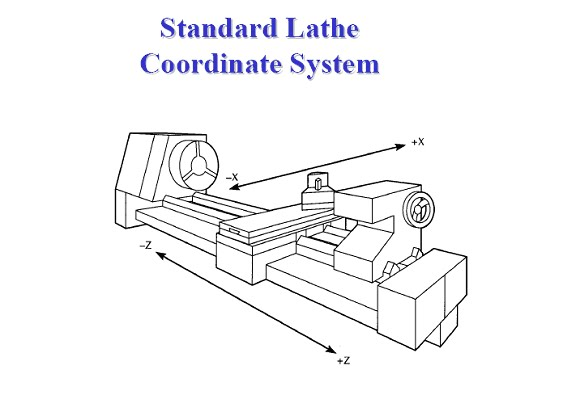

NC/CNC/DNC SYSTEMS
Exam Revision Guide for Competitive Exams
High-frequency topics: NC vs CNC memory storage, G02 (CW) vs G03 (CCW) circular
interpolation, G90 (Absolute) vs G91 (Incremental) coordinate systems, CNC lathe X/Z axes, DNC architecture,
Machining Centre definition (ATC + Indexing).
1. Core Concepts & Definitions
1.1 NC (Numerical Control)
NC = Machine controlled by coded instructions
Input: Punched paper tape with binary/binary-decimal codes
Storage: Instructions stored on tape only
Program: Difficult to modify; requires new tape
Accuracy: Manual feedback control (some systems)
Oldest form of automated machine tool control; used punch tape as primary data storage.
1.2 CNC (Computer Numerical Control) — Most-Tested Definition
CNC = Machine controlled by embedded computer
Input: Keyboard, manual input, or file upload
Storage: Program stored in computer memory (RAM/ROM)
Program: Easy to reprogram; modify on-screen before execution
Accuracy: Closed-loop feedback with encoders; self-diagnostic
Features: Unit conversion possible (inch ↔ mm); real-time error detection
Modern evolution of NC; dominant in exam questions.
1.3 DNC (Distributed Numerical Control)
DNC = Multiple CNC machines managed by central computer
Architecture: Central computer + satellite computers + multiple CNC machines
Communication: Telecommunication lines for program distribution
Advantages: Centralized program storage, bulk memory, load sharing
Satellite Role: Process large NC programs, local execution control
System for managing fleet of CNC machines in manufacturing cells.

Figure 1.1: Distributed Numerical Control (DNC) System Architecture — Central Mainframe, Data Links, & CNC Machine Fleet.
1.4 Machining Centre
Machining Centre = CNC machine + ATC + Component Indexing Device
ATC = Automatic Tool Changer (manages tool magazines)
Indexing = Rotary table or component positioning system
Capability: Multi-face machining in single setup
NOT defined by NC/CNC control type — defined by automatic tool changing and
indexing hardware.

Figure 1.2: CNC Machining Centre featuring Automatic Tool Changer (ATC) Magazine & Component Indexing System.
1.5 Positioning Methods
PTP (Point-to-Point) Positioning:
• Machine moves from one discrete point to next
• Tool path between points does not matter
• Used for: Drilling, boring, reaming (spot operations)
• Path: Rapid feed between points
Contouring (Continuous-Path) Positioning:
• Tool follows continuous path while cutting
• Multiple axes coordinate simultaneously
• Used for: Milling, turning, complex profiling
• Requires: Interpolator to generate intermediate coordinates
1.6 Interpolation (Core CNC Function)
Interpolator = CNC sub-system that generates intermediate coordinate positions
Function: Coordinates feed rates of multiple axes during continuous motion
Types:
• Linear interpolation (straight lines)
• Circular interpolation (arcs, circles — CW or CCW)
Output: Dense coordinate sequence to servo motors at high frequency

Figure 1.3: Motion Control Modes — Point-to-Point (PTP) Positioning vs Continuous-Path Contouring & Interpolation.
1.7 Feedback Systems
Open-Loop Control:
No position feedback; motor command only
Simple, low cost; drift possible over long cuts
Used for: Older NC machines
Closed-Loop Control:
Encoder/resolver senses actual position
Closed feedback loop compares command vs actual
Error correction real-time
Used for: Modern CNC machines (most common)
2. Essential Formulas & Programming Principles
2.1 NC/CNC System Block Diagram
Input Device → Program Memory → MCU (Processor)
↓
Interpolator
← Feedback Device (closed-loop)
↓
Servo Motors ← Drive System
↓
Machine Tool

Figure 2.1: Closed-Loop CNC System MCU Architecture — Processor, Interpolator, Servo Drives, & Encoder Feedback.
2.2 Coordinate System Modes (Most-Tested)
Absolute Coordinates:
Position given relative to fixed origin (0,0,0)
Command: G90
Usage: Position workpiece first time or after tool change
Incremental Coordinates:
Position given relative to current tool position
Command: G91
Usage: Successive small movements from last position
Advantage: Simplifies programming for repeated patterns
2.3 CNC Lathe Axis Definitions
X-axis = Cross motion (radial) of cutting tool
Controls depth of cut
Perpendicular to spindle axis
Z-axis = Longitudinal motion of tool/carriage
Along spindle axis
Towards (+) or away from (-) headstock
Y-axis = Absent on basic CNC lathes
Only on advanced 4-axis or 5-axis lathes
Typical statement in MCQs: "Basic CNC lathe
has no Y-axis"

Figure 2.2: CNC Lathe Coordinate Axes — Radial X-Axis (Cross Motion) & Longitudinal Z-Axis (Spindle Axis).
2.4 Unit Conversion in CNC
CNC machines support programmed unit conversion:
G21 = Metric input (millimeters)
G20 = Inch input
Advantage: Single CAM program can output metric or imperial
Exam note: "Conversion not possible in NC" is FALSE
2.5 Servo Motor vs Stepper Motor
Servo Motors:
Used for: CNC milling, machining centres (feed drives)
Feedback: Closed-loop with encoder
Accuracy: High; corrects for load changes
Speed: Moderate to high
Stepper Motors:
Used for: Some simple NC machines, older systems
Feedback: Open-loop (no feedback)
Accuracy: Lower; no correction
Cost: Lower than servo
3. CNC Programming Codes (Most-Tested)
3.1 G-Codes (Geometry / Motion Codes)
| G-Code |
Function |
Mode |
Exam Note |
| G00 |
Rapid positioning (no cutting) |
Point-to-point |
Fastest motion; used between cuts |
| G01 |
Linear interpolation (straight line cut) |
Contouring |
Most common; defines feed rate with F-code |
| G02 |
Circular interpolation clockwise (CW) |
Contouring |
FREQUENTLY TESTED — often confused with G03 |
| G03 |
Circular interpolation counter-clockwise (CCW) |
Contouring |
Opposite of G02; G03 defines CCW arc motion |
| G20 |
Inch input mode |
Unit selection |
US standard; dimension input in inches |
| G21 |
Metric (millimeter) input mode |
Unit selection |
ISO standard; dimension input in mm |
| G90 |
Absolute coordinate positioning |
Coordinate mode |
Positions relative to fixed origin (0,0,0) |
| G91 |
Incremental coordinate positioning |
Coordinate mode |
Positions relative to current tool location |
3.2 M-Codes (Machine / Miscellaneous Codes)
| M-Code |
Function |
Type |
Exam Note |
| M00 |
Program pause (manual restart required) |
Program control |
Machine stops; operator must press cycle start |
| M02 |
End of program (stop spindle, stop coolant) |
Program termination |
FREQUENTLY TESTED — marks program end |
| M06 |
Automatic tool change (ATC) |
Tool management |
Triggers tool changer to swap tools automatically |
| M08 |
Coolant ON |
Coolant control |
Starts coolant flow during cutting |
| M09 |
Coolant OFF |
Coolant control |
Stops coolant flow |
| M30 |
End of program (alternate; also rewinds tape on older NC) |
Program termination |
Similar to M02; some systems reset memory |
| F-code |
Feed rate (units per minute) |
Cutting parameter |
Example: F100 = 100 mm/min (with G21) or 100 in/min (with G20) |
| S-code |
Spindle speed (RPM) |
Spindle control |
Example: S1200 = 1200 RPM |
| N-code |
Block number / Line number |
Program structure |
Identifies each line; helps in debugging |
3.3 Other Programming Concepts
| Concept |
Definition / Use |
Exam Context |
| APT Language |
Automated Programming Tool; high-level NC programming language |
Used in CAM systems; simplifies complex part programming |
| Parametric Programming |
Uses variables and sub-programs; arithmetic operations allowed |
Simplifies repetitive patterns; reduces code length |
| Binary Coding |
Punched tape format for NC machines (holes = 1, no hole = 0) |
Historical; used in older NC systems |
| Canned Cycle |
Pre-programmed routine for common operations (drilling, boring, tapping) |
Reduces code; speeds programming |
4. Key Points to Remember
- CNC stores programs in memory; NC uses punched tape. This is the primary
distinction and most-tested difference.
- Reprogramming is easier in CNC than NC. Memory-based programs can be edited on
screen; tape requires complete remake. "Reprogramming is harder in CNC" is a FALSE
trap.
- Unit conversion is possible in CNC (G20/G21). Single program can run in
metric or imperial. "Conversion not possible in CNC" is FALSE.
- CNC has self-diagnostic features; NC does not. Modern CNC monitors tool load,
spindle current, and axis position for faults.
- DNC requires central computer, bulk memory, and communication lines. Not same as
CNC; adds network layer for multi-machine management.
- G02 = clockwise circular interpolation; G03 = counter-clockwise. FREQUENTLY CONFUSED — memorize G02 as "clockwise" to differentiate.
- G90 = absolute coordinates; G91 = incremental coordinates. Exam often tests
identifying which mode is active from program context.
- X-axis = cross motion on CNC lathe; Z-axis = longitudinal motion. Y-axis
absent on basic lathes. "Basic CNC lathe has Y-axis" is FALSE.
- Machining centre is defined by ATC + component indexing device. NOT defined by NC/CNC control type — this is a common trap. A machining centre
can be NC or CNC controlled.
- M06 = automatic tool change; triggered by ATC hardware. Different from M02
(program end); not a program terminator.
- PTP (point-to-point) used for drilling/boring; contouring for milling/turning.
PTP is faster between points; contouring maintains tool path accuracy.
- Interpolator coordinates multiple axes simultaneously during cutting. Generates
intermediate positions at high frequency to follow desired path (linear or circular).
- Closed-loop feedback uses encoders; open-loop has no position feedback.
Closed-loop corrects for cutting forces and load changes; modern CNC standard.
- Servo motors used in CNC; stepper motors in older or simple NC systems. Servo
has feedback; stepper is open-loop and simpler.
- APT is high-level NC programming language used in CAM systems. Simplifies
programming vs manual G-code entry.
Revision Focus Areas (Frequency-Ranked):
1. NC vs CNC vs DNC | 2. Axes definitions (X, Z, Y) | 3. G02/G03 & G90/G91
codes | 4. Interpolation & feedback loops | 5. Machining centre features (ATC)